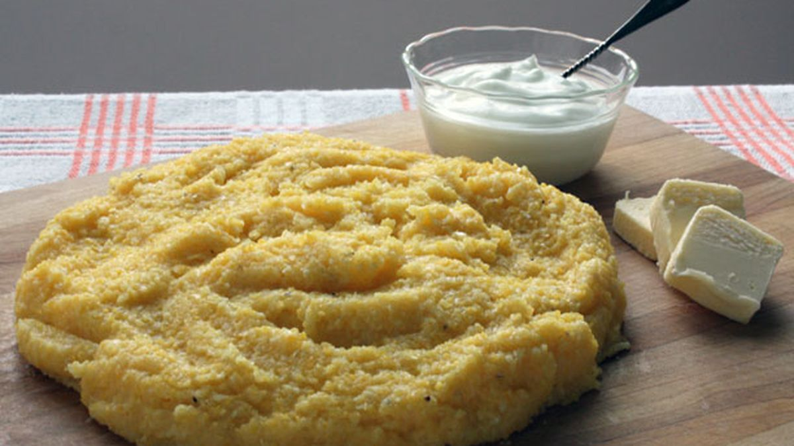

Mamaliga with sour cream

Ingredients
- 3 1/2 cups water
- 1 1/2 teaspoons kosher salt, or to taste
- 2 tablespoons unsalted butter
- 1 cup coarse yellow cornmeal
- Sour cream, optional
Instructions
- Gather the ingredients.
- Bring the water to a rolling boil. Add the salt and butter, stirring to melt.
- Using a wooden spoon, add the cornmeal very gradually, while stirring constantly in the same direction.
- Simmer over low heat, stirring frequently, until it thickens and starts to pull away from
the sides of the pot, about 35 to 40 minutes.
- Serve hot with sour cream, cheese, and/or herbs if you prefer.